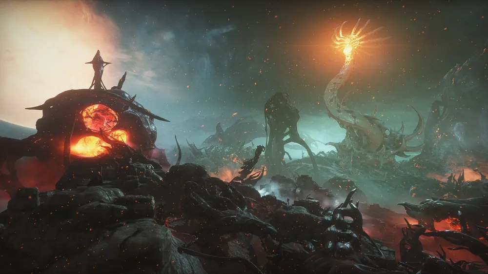
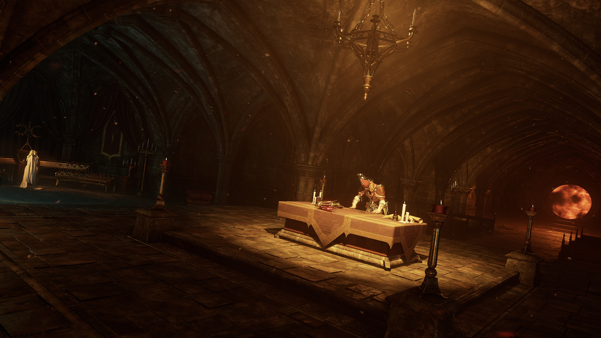
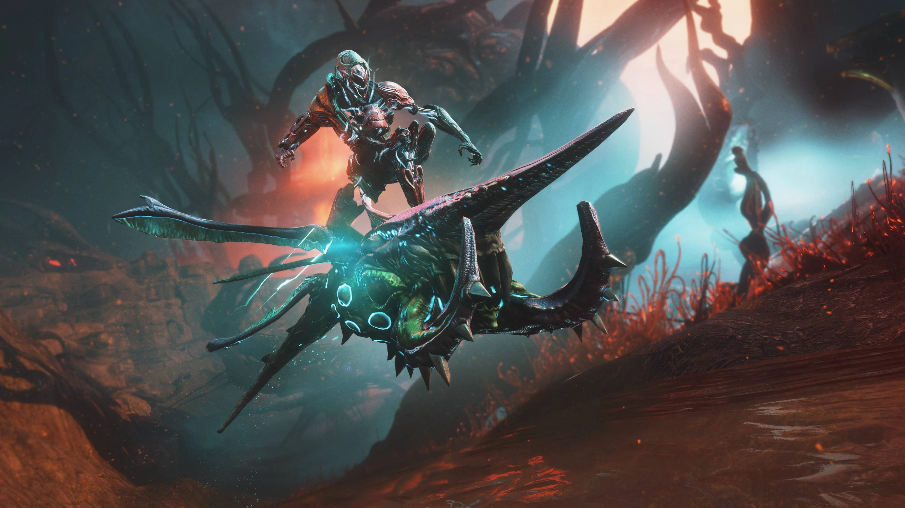
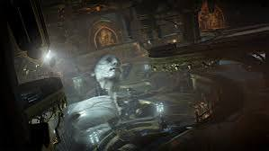
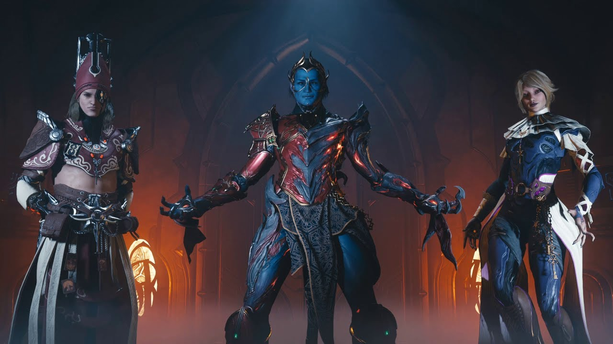
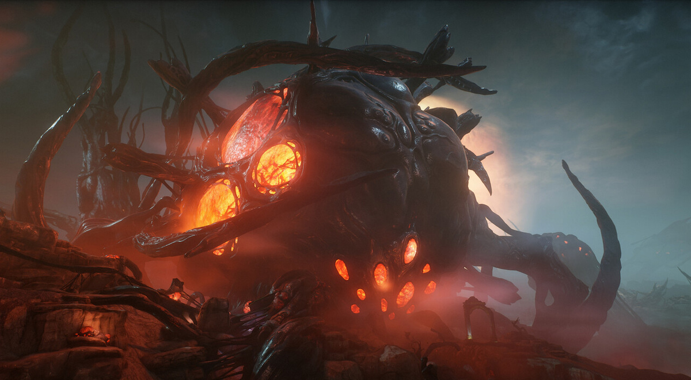

One of Mar's two moons Deimos is an infested nightmare. This moon is completly consumed by a unique strain of the infested. A family of Orkin reaseachers known as the Entrati family reside in the necrealisk. Below is a secrete labratory owned by a once lost member of the family Albrecht Entrati.
The necrealisk is home to members of House Entrati that were consumend by this unique starin of imfestation. When entering the necralisk you meet six figures mother, sister, brother, father, grandmother, and otak/loid
Outside of the necralisk is the cambion drift an large open plain where many infested roam nad two large serpent like infested kill each other every now and then
Albrecht's labratory also known as the Sanctum Anatomica is protected from the infestation but is constaly undersiege from the murmur. Albrecht is still alive but is not in his labratory. He left loid and his three test subjects(Fibonacci, Tagfer, Bird 3) to protect the labratory. Albrecht also made a home for three protoframes inside La Cathédrale.





